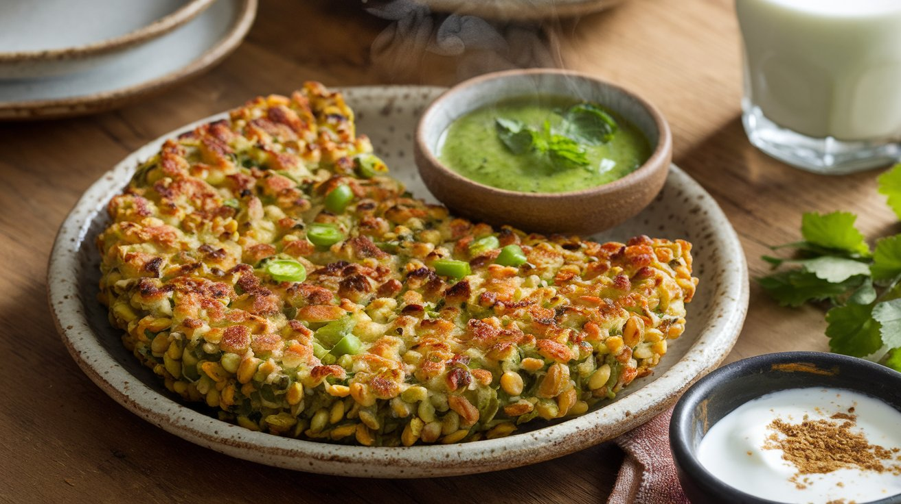

Sprouted Moong Dal Chilla
Ingredients:
- Sprouted moong dal: 50g (₹20)
- Besan (Gram flour): 20g (₹3)
- Onion: 1 small (₹3)
- Tomato: 1 small (₹3)
- Green chilies: 2 (₹2)
- Coriander leaves: Handful (₹2)
- Spices: (Turmeric, Red Chili, Garam Masala) - (₹5)
- Salt: To taste
- Oil: 1 tbsp (₹5)
- Total Cost: ~ ₹43
Instructions:
- Blend sprouted moong dal with little water into a smooth batter.
- Finely chop onions, tomatoes, green chilies, and coriander leaves.
- Mix besan and chopped veggies into the batter, adding spices and salt.
- Heat a non-stick pan, pour batter, and spread into a thin chilla.
- Cook on medium flame until golden brown, flipping once.
- Serve hot with green chutney or yogurt.
Macros per Serving:
| Nutrient | Amount |
|---|---|
| Calories | ~170 kcal |
| Protein | ~14g |
| Carbs | ~22g |
| Fats | ~4g |
Try this Sprouted Moong Dal Chilla today for a high-protein, low-calorie meal! 🌱🔥